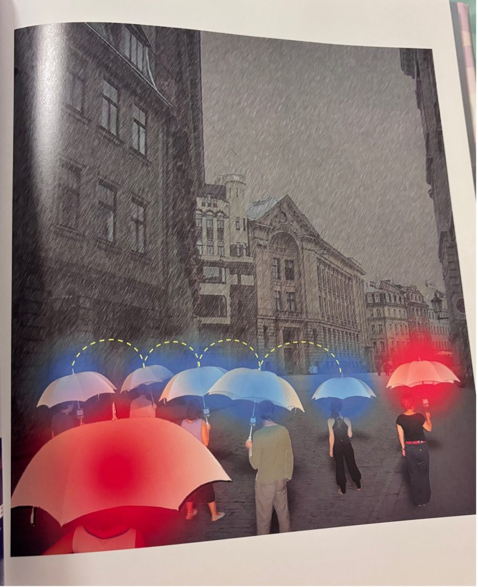
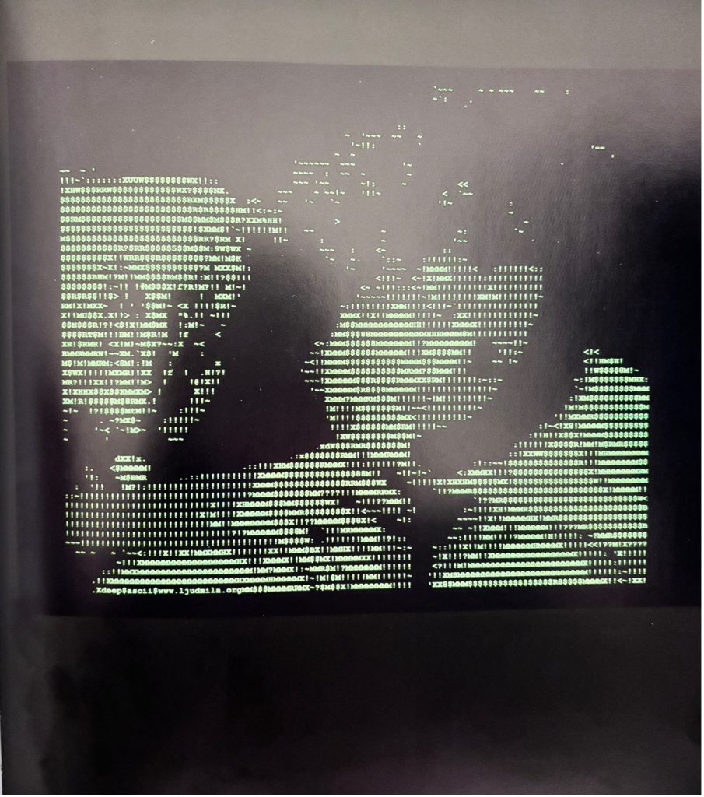
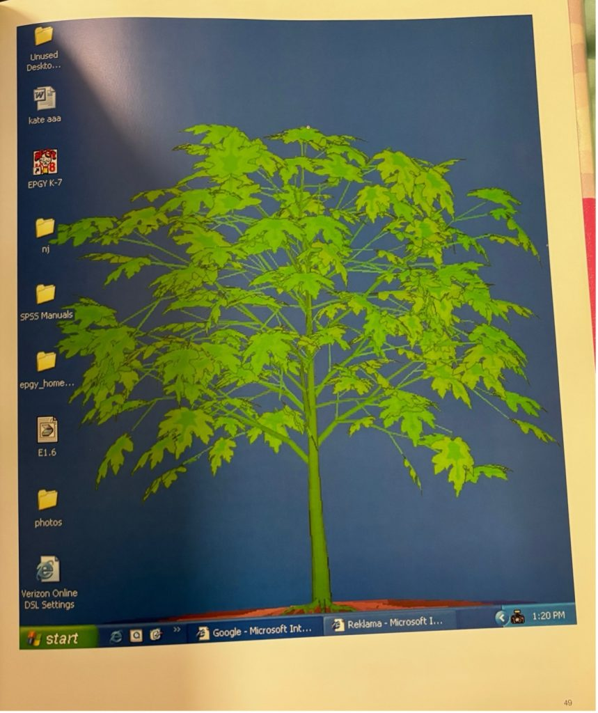
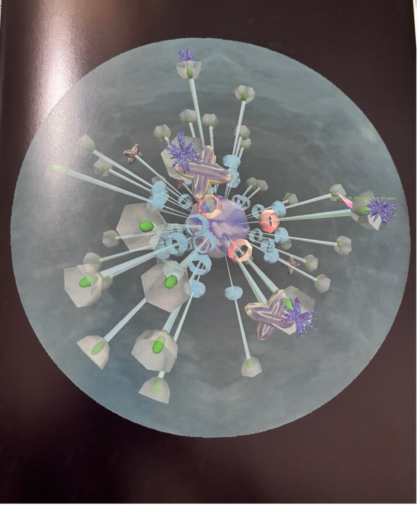

JONAH BRUCKER-COHEN AND KATHERINE MORIWAKI
UMBRELLA.net
2005, Bluetooth modules, DAWN Mobile Ad-Hoc Networking Stack, iPac Pocket PCs with 802.11b and Bluetooth, microcontrollers, sensors, umbrellas, UMBRELLA.net software

This work immediately caught my attention at first glance. From an aesthetic perspective, the tone of the entire picture is mostly grayish. However, he uses blue and red glowing umbrellas to highlight its visual characteristics, instantly attracting me to observe what he mainly wants to express, that is, this umbrella. Upon closer inspection, we also find that this umbrella is very interesting and not like an ordinary umbrella. There is an electronic device connected to the handle of the umbrella. Later, I learned that he uses a Bluetooth module, equipped with a Wi-Fi pack PC, a microcontroller, and sensors to establish a mobile network. Participants can automatically connect the device. The blue light represents a successful connection, and the red light represents searching for a network. I think this combination of technological innovation and visual beauty provides a very novel interactive way through different colors and sensations. Because it allows us to more intuitively feel the network connection through the different lights emitted by the umbrella, mapping out the Wi-Fi nodes that we cannot see. Then, through this form of performance, it inspires us to think about the possibility of technology as an art form. I think this is very interesting and can attract the audience’s attention all at once.
VUK COSIC
Deep ASCI
1998, asciimator, TTYVideo

At first glance, Vuk Cosic’s work seems like a bunch of garbled characters. However, upon closer inspection, it can be found that he cleverly uses different punctuation marks. By adjusting the thickness and layout of these symbols, he creates a unique image. He successfully combines ASCII characters with classic movie scenes, simplifying complex images into minimalist works with retro beauty. Each frame of the movie is transformed into a series of ASCII characters. With a black background and green text, it is reminiscent of the interface of early computers. This combination not only evokes nostalgia for early technologies in the digital age but also inspires us to rethink these once-forgotten forms by revitalizing marginalized technologies. Using classic movies as a medium, Cosic cleverly fuses art and technology, leading the audience to look back on the past, allowing us to regain interest in these old technologies and triggering profound thoughts on the relationship between technology and art.
NATALIE JEREMIUENKO
A-trees
1999, COz sensor, desktop plant, simulated Paradox clones

When seeing this work at first glance, it is like a tree growing on the computer desktop. The overall color is harmonious and full of vitality. After in-depth understanding, I found that this work grows according to the real-time carbon dioxide level through simulated trees, combining digital life with real environmental data and simulating the growth process of trees. It is not only visually attractive but also can be used as an environmental monitoring tool because its algorithm mimics the growth of real trees.
I think this art work cleverly fuses artificial life and natural life, combining technology with the natural world. At the same time, the author uses a carbon dioxide sensor to visualize the interaction between the audience and the surrounding environment, allowing us to intuitively feel the impact of invisible gases on the environment. This not only increases our thinking but also conveys the concept of protecting the environment.
JOHN KLIMA
Glasbead
1999-2000, C++/DirectSound, Senses WorldUp, Visual Basic

What first attracts me about this work is a translucent blue sphere with a structure inside like stamens. It is very dreamy, full of a sense of technology and futurism, and the shape is also very abstract. After learning about it, I know that the artist created this work through innovation and integration in technology, music, and visual art. He used various technologies and software such as C++, DirectSound, and Visual Basic to realize this work. In addition to the visual effects, the author also created sound elements combined with it, creating an immersive interactive experience. Users can manipulate the sound in real time by dragging and interacting with various elements in the sphere. Up to 20 participants can create music together. This interactive way not only makes users feel more involved but also stimulates their desire to explore the work. The entire work attracts the attention of participants through this abstract visual and makes them think and explore this work and its expressed meaning more deeply through interesting interactions.